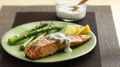

Salmon with Creamy Dill Sauce

Description
Creamy lemon dill sauce is served ladled over baked Atlantic salmon. Pairs great with grilled asparagus and brown rice.
Ingredients
- 1 salmon filet (about 2 pounds)
- 1-1/2 tsp lemon pepper seasoning
- 1st onion salt
- 1 small onion
- 6 lemon slices
- 1/4 cup butter, cubed
- 1/3 cup sour cream
- 1/3 cup mayonnaise
- 1 tablespoon finely chopped onion
- 1 tsp lemon juice
- 1 sp prepared horseradish
- 3/4 tsp dill weed
- 1/4 tsp garlic salt
- pepper to taste
Steps
- Line a 15x10x1-in. baking pan with heavy-duty foil; grease lightly. Place salmon skin side down on foil. Sprinkle with lemon pepper and onion salt. Top with onion and lemon. Dot with butter. Fold foil around salmon; seal tightly.
- Bake at 350° for 20 minutes. Open foil carefully, allowing steam to escape. Broil 4-6 in. from the heat for 3-5 minutes or until the fish flakes easily with a fork.
- Meanwhile, combine the sauce ingredients until smooth. Serve with salmon.